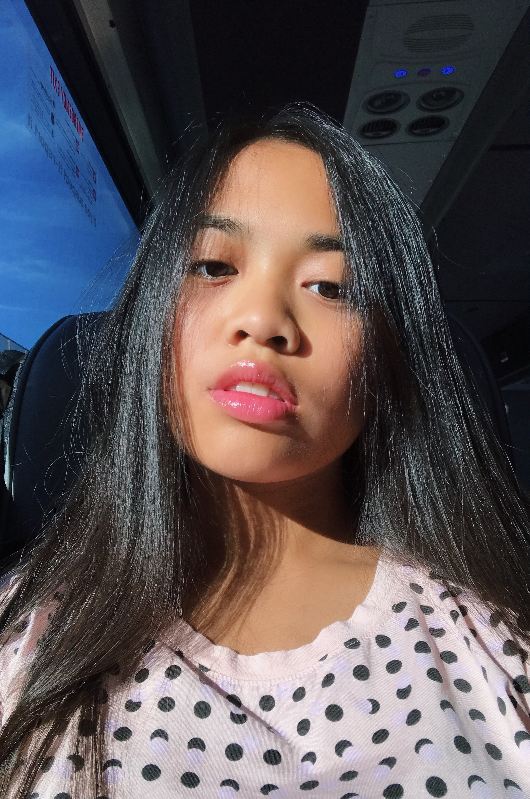
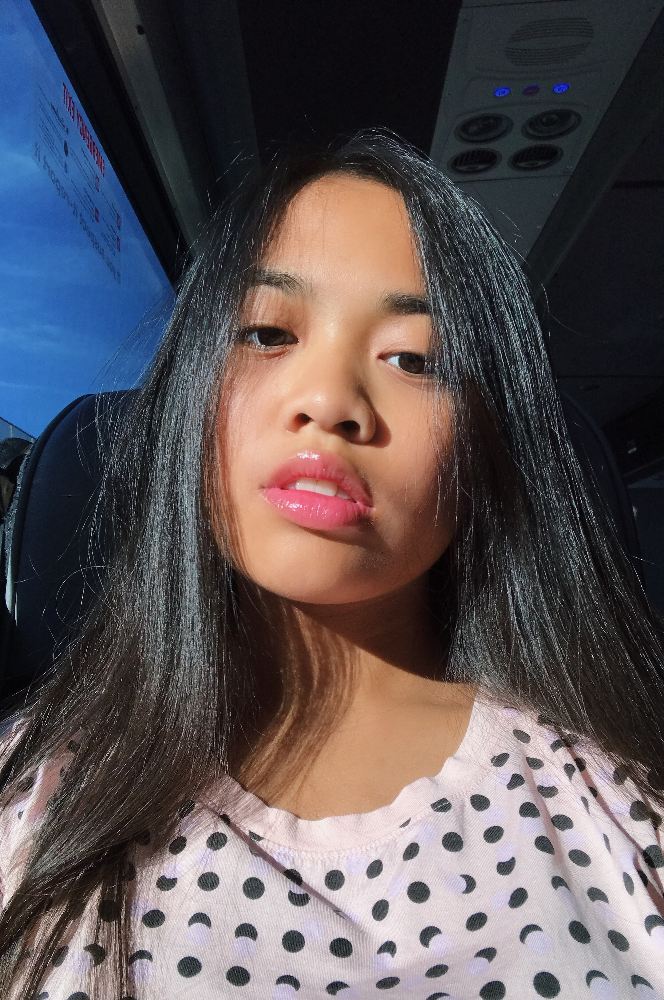

liana masangkay
eat, dance, sleep.


 


hi, my name is liana masangkay. i am an only child and i was born on february 27, 2002. i am a pisces and my myers briggs is enfj.
in school i was the vice president of my class.
in my free time i like to make dance videos(i enjoy hip hop) and i also enjoy editing them.
My favorite avorite artists in kpop are Big bang;Bts;2ne1;Blackpink; exo; nct; crush; dean. my favorite artists in urban latin/latin trap are
CNCO; rauw alejandro; lunay; lyanno.
i have been a kpop fan since fourth grade so i consider myself a kpop veteran. i started listening to big bang through my cousin’s mp3 player and i was hooked. i tend to like YG artists as their style fits me the most. If you were wondering, my ultimate bias is gdragon. My other biases from other groups include hobi, cl, rose, lay, and winwin. Watching all these kpop artists perform inspired me to start self teaching myself hip hop. i did ballet and rhythmic gymnastics up until middle school. Because i am not allowed to go to dance classes anymore, i spend my freetime watching mirrored dance practices to continue my passion for dancing. The last kpop dance i learned was Snapping by Chungha.
starting from august before junior year, i got into latin music through CNCO. i watched them perform on TV at the US Open Kids Day. i stopped going to Kids Day and just went to qualifying rounds because i would rather watch the professionals play instead of mini concerts but i regret not going last year because I am now obsessed with CNCO. They opened the world of urban latin music for me which was the best thing that ever happened to me junior year. Because of latin music, i had more motivation to learn spanish in school and learned more styles of dances. Check my instagram account!
here are some other interesting facts about me:
- Current show: La Casa de Papel
- my favorite tennis player is rafael nadal
- I want to study abroad in spanish speaking country
- I want a career in CS
- I live in nj but is a city girl
- I like turtles and porcupines
- I like game of thrones
- I like fruits